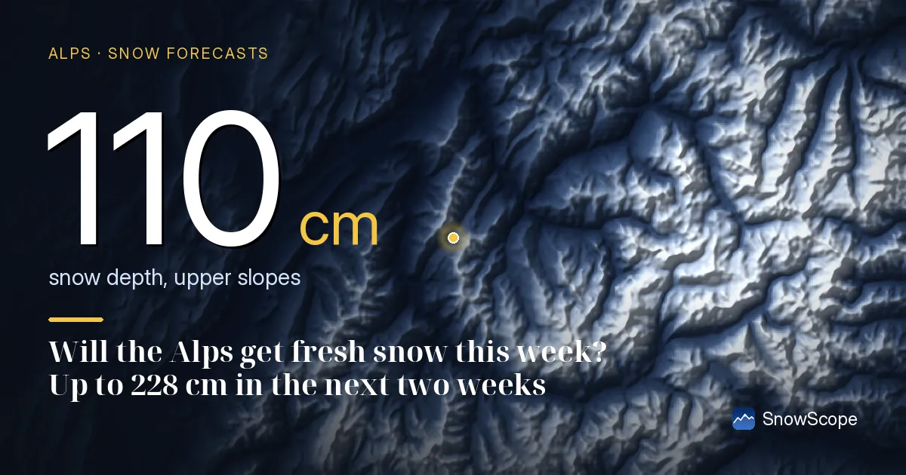
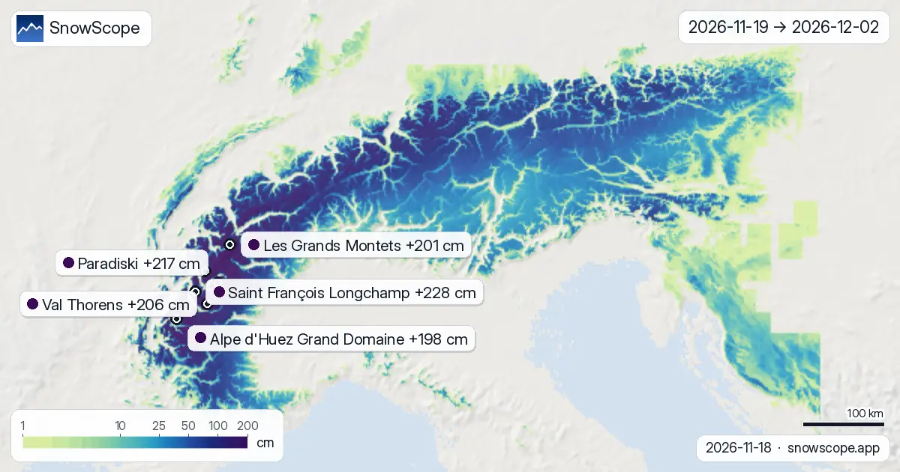
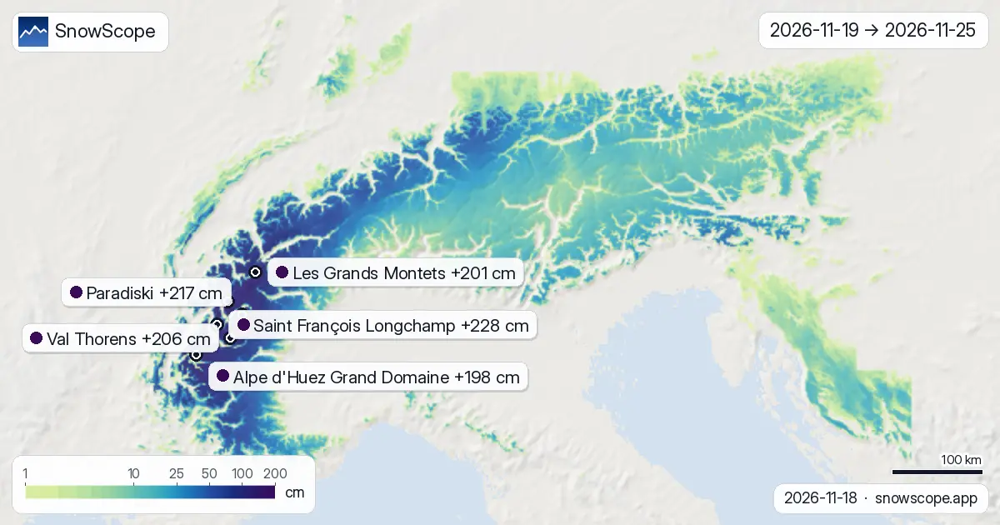

Will the Alps get fresh snow this week? Up to 228 cm in the next two weeks
Yes, significant snow is coming to the Alps over the next two weeks, with the first pulse hitting as early as Thursday. Our forecast models agree that high terrain above 2500 m will see the most snow, with some areas collecting over 120 cm by early December.
See the live snow forecast for Saint François Longchamp in the SnowScope appSnow depth, powder alerts and the 3D map, free.
When does the snow arrive?
The first major snow event begins tomorrow, Thursday 19 November. Saint François Longchamp and Paradiski will lead the Alps with 35 cm and 34 cm respectively on that day, while Les Grands Montets and Arêches Beaufort also see substantial falls. This opening burst carries most resorts' Thursday snowfall across the region.
Friday 20 November brings a second significant event, particularly at Les Grands Montets (33 cm) and Paradiski (30 cm). By contrast, Val Thorens will see the heaviest single day later, on Wednesday 25 November, with 32 cm. The pattern then shifts: week two (26 November to 2 December) brings a wetter, less concentrated pattern, though 29 November offers another active day across much of the region.
| Resort | Snow depth | New snow, 72 h | Coming, next days | Top |
|---|---|---|---|---|
| Saint François Longchamp | 42 cm | 57 cm | 96 cm | 2,516 m |
| Paradiski | 51 cm | 72 cm | 90 cm | 3,205 m |
| Val Thorens | 110 cm | 82 cm | 104 cm | 3,175 m |
| Les Grands Montets | 60 cm | 82 cm | 105 cm | 2,768 m |
| Arêches Beaufort | 25 cm | 51 cm | 92 cm | 2,319 m |
| Alpe d'Huez Grand Domaine | 71 cm | 59 cm | 91 cm | 3,306 m |

Where will snow pile up most?
Height matters dramatically here. High terrain above 3000 m will average 120 cm of new snow over the two weeks, with some slopes reaching 153 cm. At 2500–3000 m, expect around 70 cm, rising to 128 cm in favourable locations. Even at mid-mountain (2000–2500 m) the median is 61 cm, though some areas will exceed 100 cm.
Among named resorts, Saint François Longchamp leads with 228 cm forecast over the two weeks, followed closely by Paradiski (217 cm), Val Thorens (206 cm), and Les Grands Montets (201 cm). Saint François Longchamp sits at a sweet spot between 1761 m and 2516 m, catching both storms well. All these resorts should see nine or more days with 5 cm or more of new snow.

How is snow split between the two weeks?
Week one (19–25 November) dominates the forecast: it accounts for about 46 percent of the total snow that will fall in the full 14 days. Saint François Longchamp is expected to receive 138 cm in days 1–7, then 90 cm in days 8–14. The pattern is front-loaded because the first two storms (Thursday and Friday) are sharp and well-defined, whereas the second week becomes more scattered.
Week two stabilises conditions but brings less fresh snow per day. By early December, resorts will be approaching saturation and the models show diminishing snowfall. This two-step pattern is typical of late-autumn setup in the Alps: an energetic system to kick-start the season, followed by a quieter, slower recharge.

What does our model say about confidence?
Both ECMWF and NOAA models agree on the main storms on 19 and 20 November, which raises confidence in those days. The 14-day totals show wider uncertainty bands: Saint François Longchamp's low estimate is 142 cm and the high is 314 cm, reflecting the typical spread as we look further ahead. By contrast, the first three days are more tightly constrained because short-range patterns are more predictable.
Across the Alps, we estimate 95,500 km² of terrain will receive 20 cm or more over the next two weeks, and roughly 47,300 km² will exceed 50 cm. These are broad regional averages; actual accumulation will vary with slope angle, aspect, and local wind.
What should you watch out for?
Early-season snow can be thin and may expose rocks in some areas, especially at lower elevations. Snow from Thursday 19 November may settle quickly once it lands on warmer ground. By Friday and Saturday the picture improves as cumulative depth builds.
The gap between 21 and 24 November is dry and brief, so consolidation time is limited before the next pulse on 25 November. Upper slopes, particularly above 2500 m at resorts like Val Thorens and Paradiski, will fill in fastest. Lower resort bases may remain patchy until mid-week.
Tips for skiers
- Target Thursday and Friday (19–20 November) for the heaviest single-day falls; Saint François Longchamp and Les Grands Montets lead on those days.
- High slopes above 2500 m will offer the best and most continuous snow coverage throughout the two weeks; mid-mountain terrain (2000–2500 m) is reliable but may be thinner at the base.
- Watch the small dry window on 21–24 November: snow from Thursday and Friday will settle during this time, then 25 November brings a fresh top-up.
- Remember that these values are model estimates averaged over terrain; actual depth on your chosen run will depend on aspect, wind transport, and slope angle.
- Consult your local avalanche bulletin before skiing off-piste, especially in the first 48 hours when fresh snow on the ground is deepest.
About these numbers
Resort snow depths are the deepest snow on the resort's upper slopes from the SnowScope snow model (about 1 km, run of 18 November); they are estimates for an area, not a measurement at one point. Station values are measurements on the date shown. Forecasts can change. Always read the official avalanche bulletin before going off-piste.
Official avalanche bulletins: EAWS (Alps)
Cite this report
For research, teaching or the press: the numbers and charts are free to reuse under CC BY 4.0 with this citation.
SnowScope (2026), Will the Alps get fresh snow this week? Up to 228 cm in the next two weeks, https://snowscope.app/blog/en/2026/11/alps-2-week-snow-forecast-maps-18-november-2026.html, accessed 2026-11-18
SnowScope (Atlas Labs). (2026, November 18). Will the Alps get fresh snow this week? Up to 228 cm in the next two weeks. SnowScope snow reports. https://snowscope.app/blog/en/2026/11/alps-2-week-snow-forecast-maps-18-november-2026.html
BibTeX
@misc{snowscope2026alps2weeksnowforecastmap,
author = {{SnowScope (Atlas Labs)}},
title = {Will the Alps get fresh snow this week? Up to 228 cm in the next two weeks},
year = {2026},
month = nov,
howpublished = {\url{https://snowscope.app/blog/en/2026/11/alps-2-week-snow-forecast-maps-18-november-2026.html}},
note = {Published 2026-11-18 11:22 UTC; accessed 2026-11-18}
}· CC BY 4.0 · Methods, data and tools →
Saint François Longchamp: snow and temperature by height, this winter vs last (tools) →
Follow Saint François Longchamp
Free: a message when fresh snow is coming, and the forecast every morning.
More snow reports

How to spend a first day skiing in Chamonix, from the Grands Montets above Argentière to the right hour for each slope, with 46 winters of snow data.

Alpe d'Huez faces the sun. How to plan a day by the clock and by height, with the snow of 46 past winters from the low villages to Pic Blanc.

Les Grands Montets saw 74 cm of new snow in the last 72 hours, with more forecast for the coming days, according to our model on November 17, 2026.